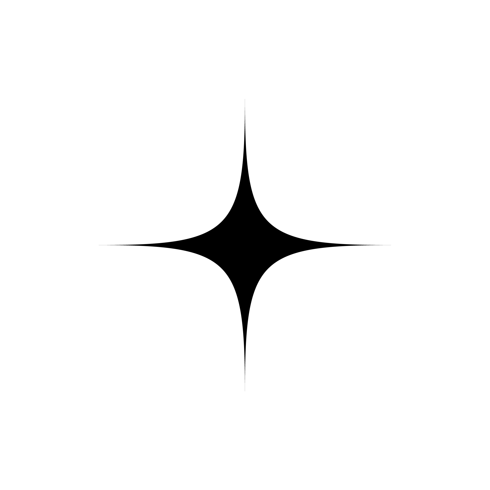
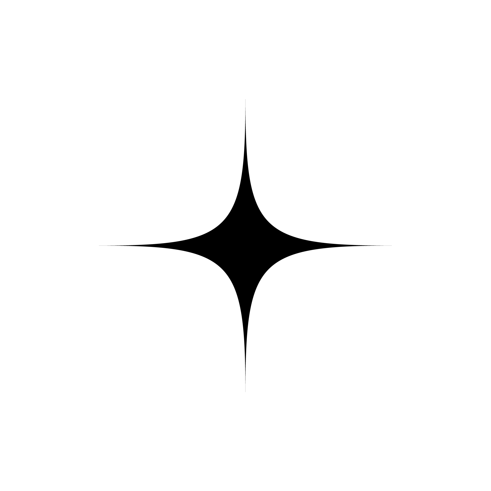

(Academic work)course / laboratorio di sintesi finale "Avanzi" professors / Luciano Crespi, Barbara di Prete, Davide Crippa, Anna Anzani work group / Silvia Carpanoni, Chiara Davoli, Francesca Pievani
 
